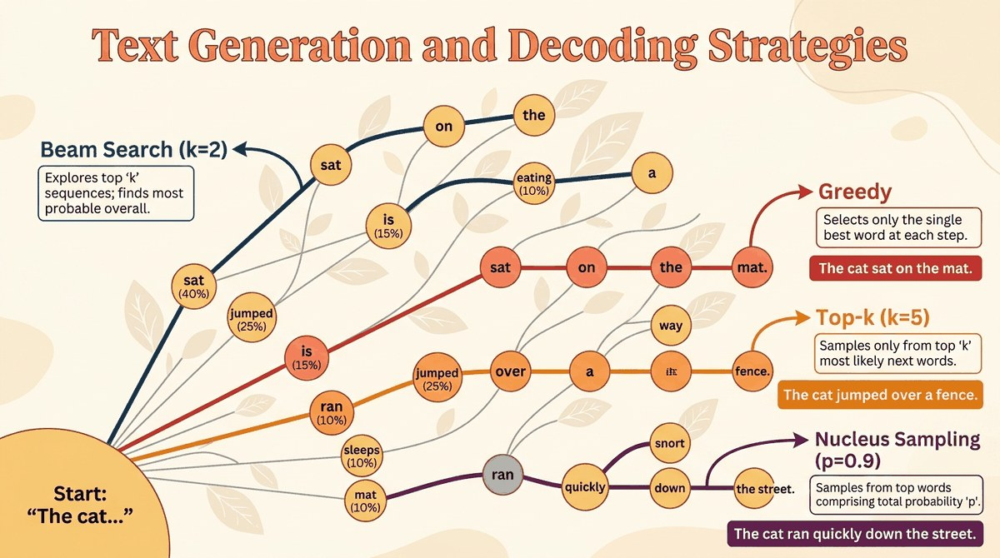

"The question is not what the model knows, but what you let it say."
Greedy, Strategically Decoded AI Agent
You built a Transformer in Chapter 4. It produces a probability distribution over the next token. This chapter answers the question the architecture left open: which token do you actually pick? Greedy, beam search, temperature sampling, top-k, top-p (nucleus), and how each one shapes the output. Understanding decoding is the difference between a model that confidently hallucinates and one that knows when to say "I don't know."
Chapter Overview
A language model learns a probability distribution over sequences of tokens, but that distribution alone does not produce text. The bridge between a trained transformer model and the words it generates is the decoding strategy: the algorithm that selects which token comes next (or, in newer paradigms, which tokens appear all at once). The choice of decoding method profoundly affects quality, diversity, coherence, speed, and even the safety of generated output.
This chapter walks through the full landscape of text generation, from the simplest deterministic methods (greedy search, beam search) through stochastic sampling techniques (temperature, top-k, top-p, min-p) to advanced and emerging approaches (contrastive decoding, speculative decoding, structured generation, watermarking, and diffusion-based language models). By the end, you will understand not just what each method does, but when and why to choose one over another.
Once a language model has finished its forward pass it has a probability distribution over every possible next word, but a distribution is not a sentence. Decoding is the moment the editor (greedy, beam, nucleus, temperature) hands the manuscript back to the author (the model) and says "pick one." Different decoders produce different voices, and the voice difference is sometimes larger than the model difference.
A trained transformer is a probability distribution over the next token; turning that into useful text requires a decoding strategy. This chapter covers greedy, beam, top-k, nucleus, and structured decoding, plus the diffusion-language-model approach that has begun challenging autoregressive generation. The decoding choices you make at inference are often as impactful as fine-tuning.
The reference paper for nucleus (top-p) sampling is Holtzman et al., "The Curious Case of Neural Text Degeneration" (2019, arXiv:1904.09751), which introduced the truncation idea now baked into every chat API. Contrastive decoding's canonical paper is Su et al., "A Contrastive Framework for Neural Text Generation" (NeurIPS 2022, arXiv:2202.06417). On the deployment side, OpenAI's Chat Completions API exposes temperature and top-p as first-class knobs, making the decoding choices in this chapter directly visible at the application layer.
- Implement greedy decoding and beam search from scratch; explain their strengths and failure modes
- Apply temperature scaling, top-k, top-p, and min-p sampling; visualize how each reshapes the token probability distribution (these parameters also appear as LLM API settings)
- Explain repetition penalties, frequency penalties, and presence penalties, and when each is appropriate (see also prompt engineering for complementary strategies)
- Describe contrastive decoding, speculative decoding (see also Chapter 09: Inference Optimization), and minimum Bayes risk decoding at a conceptual and algorithmic level
- Use grammar-constrained decoding to enforce structured output (JSON, XML) at the logit level
- Explain the principles behind text watermarking and its implications for AI safety
- Articulate how diffusion-based language models differ from autoregressive generation, including their advantages and current limitations
Prerequisites
Sections
- 4.1 Deterministic Decoding Strategies Why does decoding matter? Entry
- 4.2 Stochastic Sampling Methods Why add randomness? Intermediate
- 4.3 Advanced Decoding & Structured Generation Sections 5.1 and 5.2 covered the foundational decoding strategies that every practitioner should know. Advanced
- 4.4 Diffusion-Based Language Models Every technique we have studied so far in this chapter (from greedy search in Section 4.4 through advanced methods in Section 4.4) generates text one token at a time, left to right. Advanced
What's Next?
Next: Chapter 5: Tools of the Trade, Foundations Stack. You have now built the conceptual skeleton: tensors, gradients, tokens, attention, transformers, and decoding. Chapter 5 closes Part I with the consolidated reference of libraries, datasets, and tooling that every subsequent part assumes (PyTorch, Hugging Face, datasets, tokenizers, evaluation harnesses). After that, Part II shifts from "how a transformer works" to "what a 70-billion-parameter model actually does at scale".